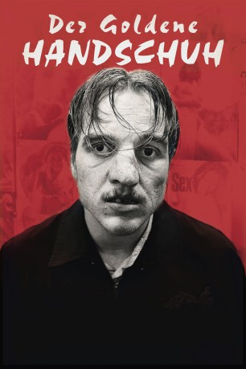

#11556 Der Goldene Handschuh
 gesehen am 29.07.2019
gesehen am 29.07.2019
 
 IMDB-Wertung: 6.7 / 10
IMDB-Wertung: 6.7 / 10  Tomatometer: 36
Tomatometer: 36  Metascore: 28
Metascore: 28 
Hamburg-St. Pauli in den Siebzigerjahren: Auf den ersten Blick ist Fritz „Fiete“ Honka ein bemitleidenswerter Verlierertyp. Seine Nächte durchzecht der Mann mit dem kaputten Gesicht in der Kiezkaschemme „Zum goldenen Handschuh“ und stellt einsamen Frauen nach. Keiner der Stammgäste ahnt, dass der scheinbar harmlose Fiete in Wahrheit ein Monster ist.
Jahr: 2019
Dauer: 109 Minuten
FSK: 18
Land: Deutschland Studio: Warner Bros.Tonspuren: - , - ,
Untertitel:
Auflösung: 1080p (1920x1040) Größe: 7208 MB
Genre: Thriller, Horror, Drama, Krimi
Regisseur: Fatih Akin
Drehbuch: Fatih Akin, Heinz Strunk
Soundtrack:
Darsteller:
- Jonas Dassler als Fritz Honka
- Margarete Tiesel als Gerda Voss
 Adam Bousdoukos als Lefteris
Adam Bousdoukos als Lefteris- Katja Studt als Helga Denningsen
 Martina Eitner-Acheampong als Frida
Martina Eitner-Acheampong als Frida Marc Hosemann als Siggi Honka
Marc Hosemann als Siggi Honka Philipp Baltus als Zuhälter
Philipp Baltus als Zuhälter Laurens Walter als Polizist
Laurens Walter als Polizist- Hark Bohm als Dornkaat-Max
 Tristan Göbel als Willi
Tristan Göbel als Willi- Victoria Trauttmansdorff als Gisela
- Jessica Kosmalla als Ruth
- Tom Hoßbach als Fritz Honka (jung)
- Greta Sophie Schmidt als Petra Schulz
- Uwe Rohde als Herbert Nürnberg
- Barbara Krabbe als Anna
- Tilla Krachtovil als Inge
- Dirk Böhling als Soldaten-Nobert
- Jens Weisser als Passant
- Peter Badstübner als Tampon-Günther
- Lars Nagel als Nasen-Ernie
- Klaus Bobach Rios als Halbstarker
- Simon Goerts als Anus
- Jörg Wischnauski als Werftarbeiter (uncredited)
Datei: X:\FSK18-2019\Goldene Handschuh, Der (2019, FSK18, 1920x1040).mkv seit 26.07.2019
Festplatte: FSK18
 Es gibt insgesamt 10 Filme in der Gruppe 'FSK18-2019'
Es gibt insgesamt 10 Filme in der Gruppe 'FSK18-2019'